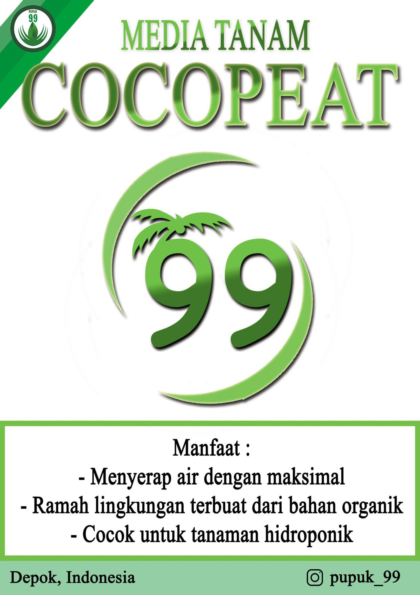

TENTANG KAMI
Pupuk 99 adalah sebuah perusahaan bidang perdagangan dimana kami menjalankan distribusi dan perdagangan mediatanam. Perusahan kami berdiri pada 8 Agustus 2020 di Kota Depok. Kami memiliki produk unggulan yang berkualitas seperti Pupuk kandang kambing 99. Selain produk unggulan yang kami miliki, Pupuk 99 juga menyediakan berbagai macam produk lainnya yang tidak kalah, seperti ; Cocopeat, Sekam Mentah, Sekam Bakar, dan lain-lainnya. berikut beberapa produk unggulan kami :
Pupuk Kandang Kambing 99 Butiran

Pupuk kandang bermanfaat untuk menyediakan unsur hara makro dan mikro dan mempunyai daya ikat ion yang tinggi sehingga akan mengefektifkan bahan-bahan an organik di dalam tanah, termasuk pupuk an organik.selain itu, pupuk kandang bisa memperbaiki struktur tanah, sehingga pertumbuhan tanaman bisa optimal. Pupuk kandang ini bentuknya berupa butiran dan bisa langsung dipakai dipermukaan tanah.
Pupuk Kandang Kambing 99 Halus

Pupuk kandang bermanfaat untuk menyediakan unsur hara makro dan mikro dan mempunyai daya ikat ion yang tinggi sehingga akan mengefektifkan bahan-bahan an organik di dalam tanah, termasuk pupuk an organik.selain itu, pupuk kandang bisa memperbaiki struktur tanah, sehingga pertumbuhan tanaman bisa optimal. Pupuk kandang ini bentuknya berupa halus seperti tanah dan bisa langsung dipakai dipermukaan tanah.
Cocopeat 99
Media tanam organik ini memiliki kualitas tak kalah dengan tanah. Cocopeat adalah media tanam yang dibuat dari sabut kelapa. Oleh karena itu, paling mudah ditemukan di negara-negara tropis dan kepulauan, seperti Indonesia. Banyak manfaat yang bisa didapat dengan menggunakannya. Baik untuk digunakan bersama tanah, atau berdiri sendiri. Cocopeat juga banyak dipilih sebagai pengganti tanah.
Sekam Bakar 99

Arang sekam adalah limbah pertanian yang memiliki sifat porous, ringan, tidak kotor, sehingga sangatlah cukup dapat menahan air. Penggunaan arang sekam cukup meluas dalam budidaya tanaman hias ataupun sayuran (terutama budidaya secara hidroponik). Arang sekam bisa dengan mudah diperoleh di toko-toko pertanian. Namun tidak ada salahnya memproduksi sendiri arang sekam untuk keperluan sendiri serta bahkan mungkin dapat menjualnya nanti.
Kontak Person
Jalan Baru Plenongan, Kampung Lio
Pancoran Mas, Kota Depok, Jawa Barat,
Indonesia
0812-1371-0136